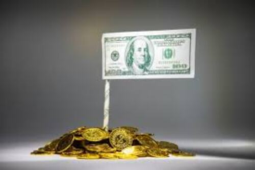
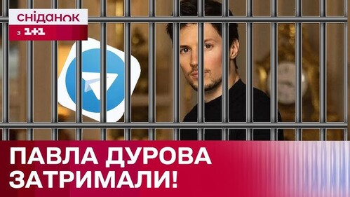

Найдорожчий нікнейм 🤯
Рекордна пропозиція у розмірі $25 млн 😱 була запропонована за нікнейм @crypto у
месенджері Telegram. Продажі коротких імен на аукціонах платформи справді
досягають мільйонних сум (наприклад, нік @danbao було продано за $2 млн), а юзернейм @news оцінювався у $5,8 млн.

Затримання Павла Дурова!
Засновника Telegram Павла Дурова затримали в аеропорту Парижа (Франція) 24
серпня 2024 року. Згодом його відпустили під заставу, а наприкінці 2025 року
влада Франції зняла обмеження на пересування бізнесмена, пов'язані з
розслідуванням щодо відсутності модерації в месенджері
- Причина затримання: Дурова звинувачували у бездіяльності адміністрації
Telegram щодо фінансових, кіберзлочинів та розповсюдження незаконного
контенту, які здійснювалися через платформу.
-
Судовий процес: Розслідування триває, проте офіційна передача справи до
суду очікується не раніше ніж через рік від попередніх рішень. Сам Дуров
заперечує звинувачення, наголошуючи на тому, що месенджер не створювався
для злочинців.
- Ситуація зараз: Павло Дуров продовжує керувати компанією та робити
публічні заяви, зокрема закликаючи користувачів до цифрового опору проти
блокувань у деяких країнах.
Plush Pepe
Найдорожчим NFT-подарком в історії Telegram став Plush Pepe (Плюшевий
Пепе), рідкісні екземпляри якого оцінювалися в 30 000 TON і продавалися на
вторинному ринку на суму понад $230,000. Загалом ці цифрові активи стали
повноцінними предметами розкоші Web3.